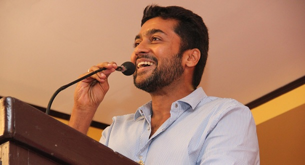
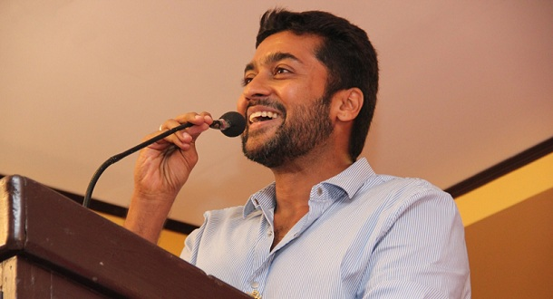
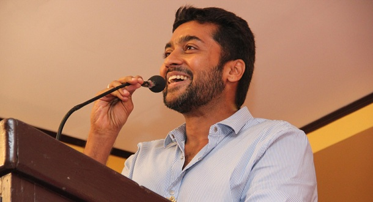

Suriya Education Institute


Agaram Foundation is a non-profit organization started by popular Tamil actor Suriya in 2006, with the aim of supporting underprivileged students in Tamil Nadu, especially those from rural areas. The foundation focuses on providing quality education, scholarships, and mentorship through programs like Vidhai and Vazhikatigal. Over the years, Agaram has helped thousands of first-generation learners pursue their dreams by funding their school and college education. Actor Suriya not only leads the initiative but has also made significant personal contributions, including a ₹10 crore donation from the profits of his movie Retro in 2025. The foundation recently opened a new center in Chennai to further expand its impact. Suriya believes that education is the most powerful tool to change lives, and through Agaram, he continues to uplift and empower youth across the state.


Suriya, apart from being a successful and talented actor, is also a compassionate and socially responsible human being. Through his Agaram Foundation, started in 2006, he has helped transform the lives of thousands of underprivileged students across Tamil Nadu. The foundation focuses on education, mentorship, and empowerment for first-generation learners, especially from rural backgrounds. Suriya believes that education is the key to true change, and his vision and dedication have made Agaram a life-changing platform for many youth. His selfless work has inspired many to give back to society and support the cause of equal education for all.